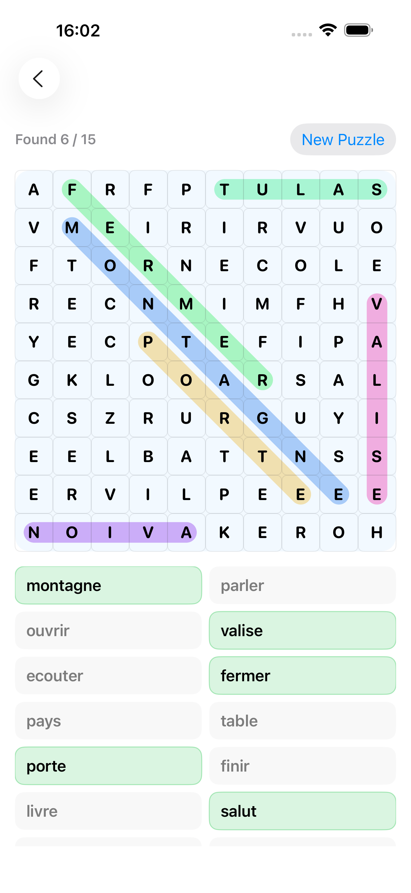

How to play
- Scan the grid for listed target words.
- Drag across letters to select each word.
- Find all targets to complete the puzzle.
- Use repeated play to reinforce spellings.
Game mode
Find hidden French words in a letter grid to build visual recognition and spelling confidence.
